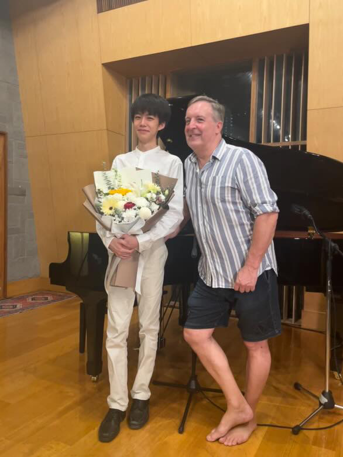
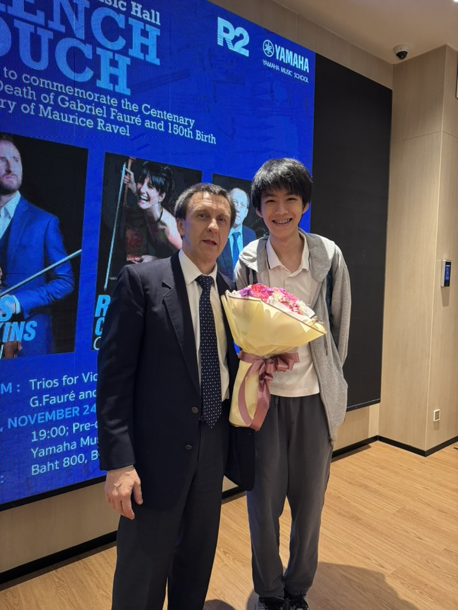
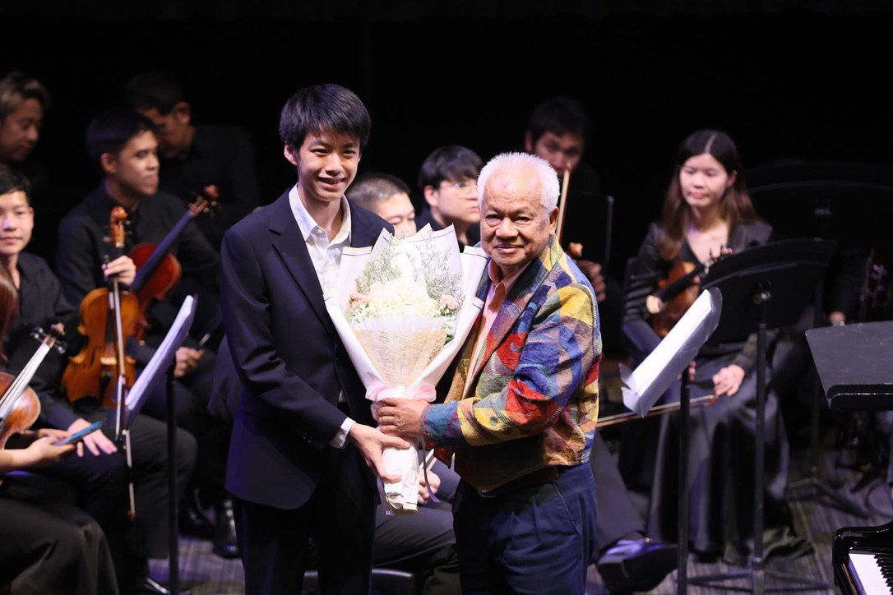
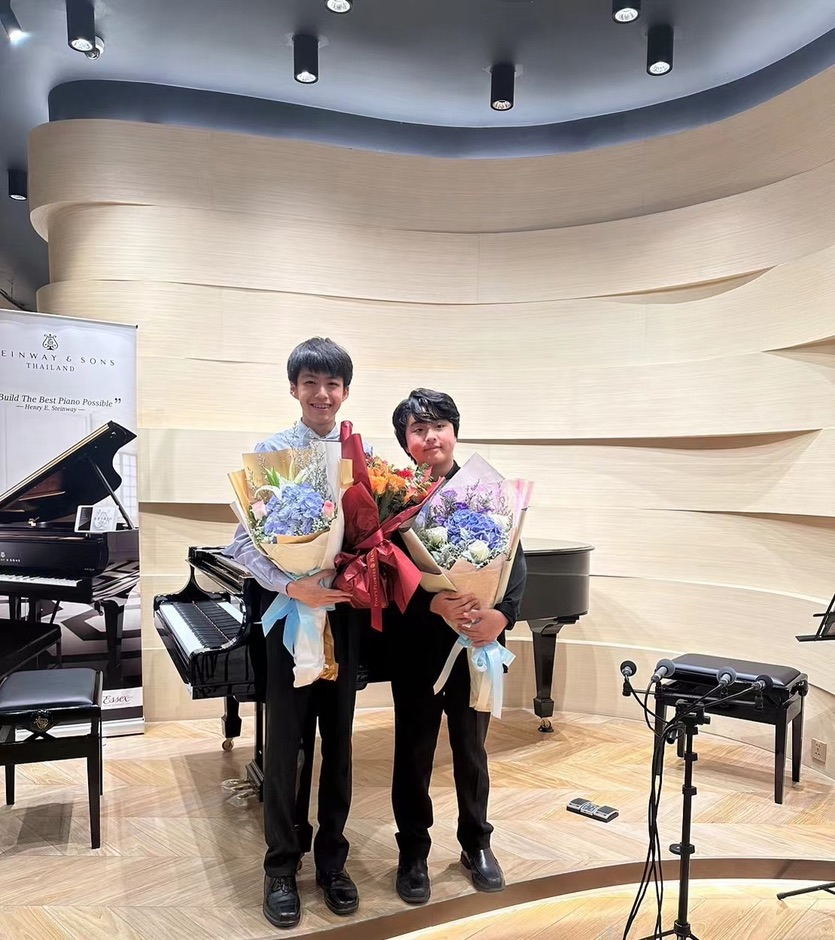

Solo recital at Karma Sound Studio with my producer Chris Craker.

With my teacher after a joint concert.

After performing with the Thai Symphony Orchestra, presented flowers by renowned Thai pianist Sugree Charoensook.

After a joint concert at Steinway Gallery, Bangkok, 2024.
At age 11, performing for elderlies in a nursing home in America—a meaningful and memorable experience.